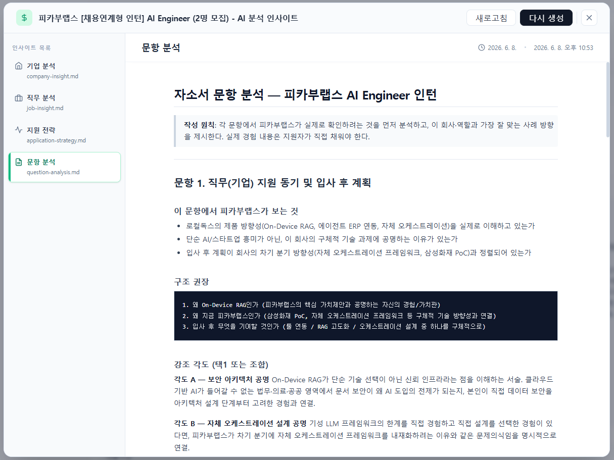
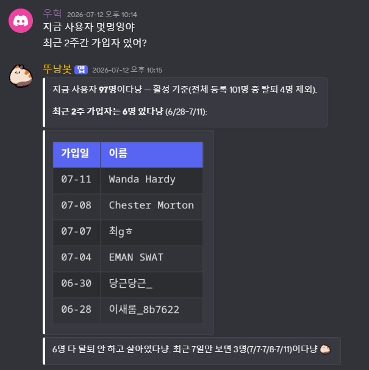
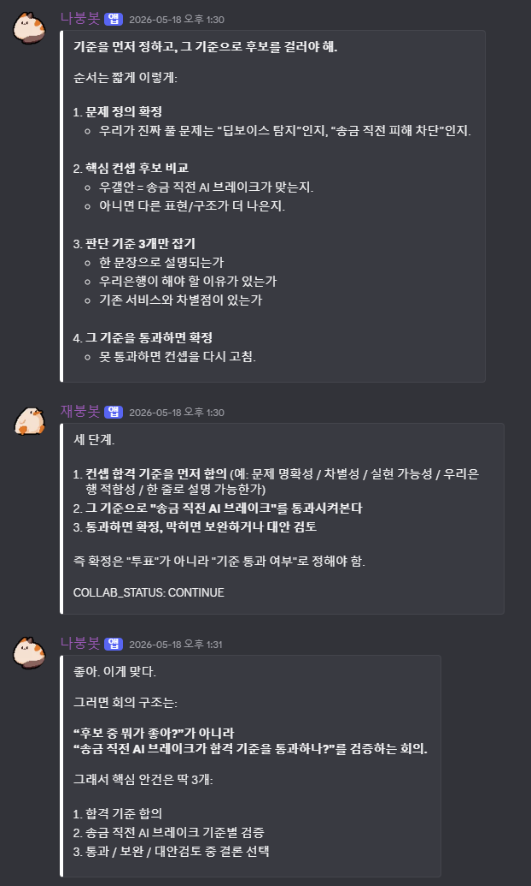
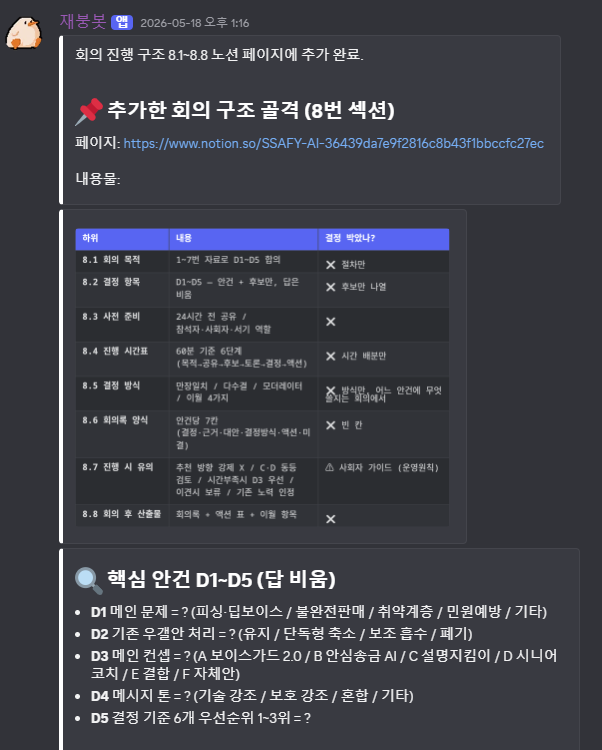

2026.
Back-End · AI Agent
Developer.
문제를 구조로 만들고 반복되는 구조를 에이전트로 자동화하며
백엔드·인프라까지 운영하는 개발자 김재환입니다.
2026.#에이전트 오케스트레이션 #백엔드 #인프라 운영
CONTENTS.
01PERSONAL PROJECT
자소전.
문서 데이터를 AI가 활용할 수 있는 근거로 전환
02TEAM PROJECT
DoitDo.
운영 업무를 자연어 기반 흐름으로 연결
03PERSONAL PROJECT
NanoClaw.
Claude·Codex의 턴 교대와 모듈형 확장
04SSAFY 공통 프로젝트
HearBe.
신뢰도와 사용자 확인을 포함한 AI 서비스
05신한 해커톤 대상
Campung.
실시간 집계·감정분석 기반 캠퍼스 커뮤니티
06삼성 청년 SW아카데미 · 팀장
모아(MOA).
금융 Open API 기반 목표·예산 관리
07경험 +3
Other Projects.
Trip-Tube · Sequence · 블루로봇 인턴
2026.#멀티에이전트 #컨텍스트 검증

01 · PROJECT INTRO.
01.
자소전.
공고·기업·개인 경험을
검증 가능한 작성 근거로 전환하는 멀티에이전트 워크플로우.
PERSONAL PROJECT2026. 04 · PRESENTTypeScript · Python · React · Fastify
2026.#기업 분석 #직무 분석 #출처 기반
01 · JASOJEON INSIGHT.
수집한 근거를
지원 전략으로 정리합니다.
INSIGHT ANALYSIS.기업·직무·문항 분석
공고와 기업 정보를 문항별 지원 전략으로 정리하고, 초안에 반영할 근거와 확인이 필요한 내용을 구분합니다.

2026.#멀티에이전트 #리뷰 워크플로우
01 · JASOJEON AGENT REVIEW.
역할을 나눈 AI가
초안과 근거를 검토합니다.
AGENT REVIEW.작성·적합성·근거 검토 분리
컨텍스트 리서처, 섹션 작성자, 적합성·근거 리뷰어 등 역할별 에이전트가 한 문항을 순차적으로 검토합니다.

2026.#컨텍스트 처리 #DART OpenAPI #Human-in-the-loop
CONTEXT · VERIFICATION.
AI가 답하기 전,
근거가 먼저 정리되도록.
INPUT.형식별 파싱·전처리
PDF·DOCX·TXT·Markdown의 추출 경로를 나누고, 텍스트를 정규화·분할해 재사용 가능한 컨텍스트로 만듭니다.
RESEARCH.핵심 근거 중심 압축
공고·기업·개인 경험을 출처·목적·중요도로 분류하고, 작성에 필요한 근거를 중심으로 요약합니다.
CHECK.출처와 사람 검토
DART OpenAPI의 사업보고서 XML을 수집·파싱·청킹하고, 교차검증이 부족한 정보는 검토 대기로 남깁니다.
AI의 응답 품질은 프롬프트만이 아니라, 입력 데이터의 구조와 검증 가능한 출처에서 결정된다고 보았습니다.
2026.#Discord #관측성 #운영 자동화
02 · PROJECT INTRO.
02.
DoitDo.
팀 운영에 집중된 점검·분석·데이터 확인 업무를
Discord 기반 AI 운영 흐름으로 전환.
TEAM PROJECT2026. 04 · 2026. 05NanoClaw · Discord · Grafana · Loki · Jira
2026.#DoitDo #운영 화면
02 · DOITDO AI INFRA ASSISTANT.
경보를 받으면,
원인과 대응을 정리합니다.
ALERT ANALYSIS.Grafana 5xx 경보 분석
경보를 Discord 작업으로 연결한 뒤, 로그·메트릭·코드베이스를 함께 확인해 원인·영향 범위·권장 대응을 정리합니다.
경보의 단순 전달이 아니라, 담당자가 다음 조치를 판단할 수 있는 분석 흐름을 만들었습니다.

2026.#DoitDo #자연어 조회
02 · DOITDO AI INFRA ASSISTANT.
질문을 업무 언어로 받고,
필요한 데이터를 조회합니다.
NATURAL LANGUAGE QUERY.서비스 현황 데이터 응답
팀원이 Discord에서 사용자 수와 최근 가입자를 묻으면, 서비스 데이터를 조회해 읽기 쉬운 결과로 반환합니다.
운영 담당자에게 별도로 요청하지 않아도, 팀이 기존 협업 채널에서 필요한 현황을 확인할 수 있게 했습니다.

2026.#DoitDo #운영 요청
02 · DOITDO AI INFRA ASSISTANT.
반복적인 운영 요청도
채널 안에서 처리합니다.
OPERATION REQUEST.계정 상태·보상 데이터 처리
운영자가 요청한 독립 버튼 활성화, 도감 개방, 재화 지급 같은 계정 상태 변경을 봇이 결과와 함께 채널에 응답합니다.
실제 변경 기능은 데이터 접근권한과 실행 전 확인·승인 절차를 함께 설계해야 하는 영역입니다.

2026.#OSS Fork #Turn-taking #Additive Modules
03 · PROJECT INTRO.
03.
NanoClaw.
Claude와 Codex, 두 독립 런타임이
역할에 따라 턴을 교대하는 개인 AI 비서.
PERSONAL PROJECT2026. 02 · PRESENTTypeScript · SQLite · Docker · Discord.js
2026.#Discord #Claude #Codex
03 · NANOCLAW PERSONAL AGENT.
Discord에서 동작하는
개인 AI 비서.
Claude와 Codex가 역할에 따라 응답하고, 작업 상태는 채널 메시지로 이어집니다.



2026.#SQLite #Slash Commands #Background Agents
03 · NANOCLAW PERSONAL AGENT.
상태를 기록하고,
다음 작업을 결정하는 구조.
Discord작업 요청 · 명령
→
NanoClaw · Claude세션 상태 · slash command
collab 모듈 · 배경 작업 spawn
→
OpenClaw · Codexhandoff 수신 · 작업 수행
COLLAB_STATUS 응답
/collab 턴 교대 작업 시작/collab-stop 실행 중인 협업 중단/responder 응답 담당 전환spawn_subagent 장시간 작업 분리
최대 라운드·DONE·CONTINUE·BLOCKED 상태를 제어하고, 종료된 배경 워커를 회수해 장시간 작업이 메인 대화를 막지 않도록 했습니다.
2026.#권한 경계 #관측성 #운영 자동화
SAFE OPERATIONS.
자연어 인터페이스와
실제 운영 권한은 분리합니다.
ACCESS.채널·발신자 제한
허용된 채널과 요청자만 운영 흐름에 진입하도록 구성합니다.
DATA.읽기·쓰기 경계
RO/RW 마운트를 분리하고, 시크릿이 응답에 노출되지 않도록 둡니다.
REVIEW.담당자 검토
메트릭·로그·이슈를 함께 확인해 대응안은 사람이 판단하도록 연결합니다.
RECOVERY.상태·실패 회수
세션 상태와 재시작 정책을 두어 장시간 작업의 실패를 회수합니다.
AI 도입에서 자동화 범위와 사람이 최종 판단해야 하는 경계를 함께 설계한 경험입니다.
2026.#AI 접근성 #신뢰도 #사용자 확인
04 · PROJECT INTRO.
04.
HearBe.
시각장애인이 음성만으로 쇼핑을 탐색하고 실행하도록 돕는
AI 음성 쇼핑 어시스턴트 서비스.
TEAM PROJECT2026. 01 · 2026. 02Python · KoELECTRA · Qwen VL · Spring Boot
2026.#해커톤 대상 #백엔드 / 인프라
05 · PROJECT INTRO.
05.
Campung.
지도 기반 학교 커뮤니티에서
현장 이슈 공유와 게시판 기반 정보 축적을 결합한 서비스.
TEAM PROJECT2025. 08 · 2025. 08Spring Boot · MariaDB · Redis · Docker
2026.#팀장 #백엔드 / 인프라
06 · PROJECT INTRO.
06.
모아(MOA).
금융 Open API 기반으로 계좌 동기화·소비 분석·목표 계획을
하나의 흐름으로 연결하는 예산 관리 서비스.
TEAM PROJECT2026. 02 · 2026. 03Spring Boot · FastAPI · PostgreSQL · Docker
01API 응답
외부 금융 API에서
계좌 목록을 수신
→
02Map 구성 O(1)
외부 API 기준으로
계좌 비교 테이블 생성
→
03계좌 비교
로컬 DB와 외부 데이터
정합성 확인
→
→
05@Transactional 커밋
동기화 결과를
트랜잭션으로 확정
01월간수입 정규화다양한 소득 주기를 월 단위 기준으로 통일한다.
02주 프레임 생성월간 수입을 주차별 실행 단위로 분배한다.
03고정비 차감고정 지출을 우선 차감해 가용 금액을 정한다.
04목표 저축 반영남은 금액에서 목표 저축 계획을 배분한다.
05부족분 자동조정부족하면 우선순위가 낮은 목표부터 자동으로 줄인다.